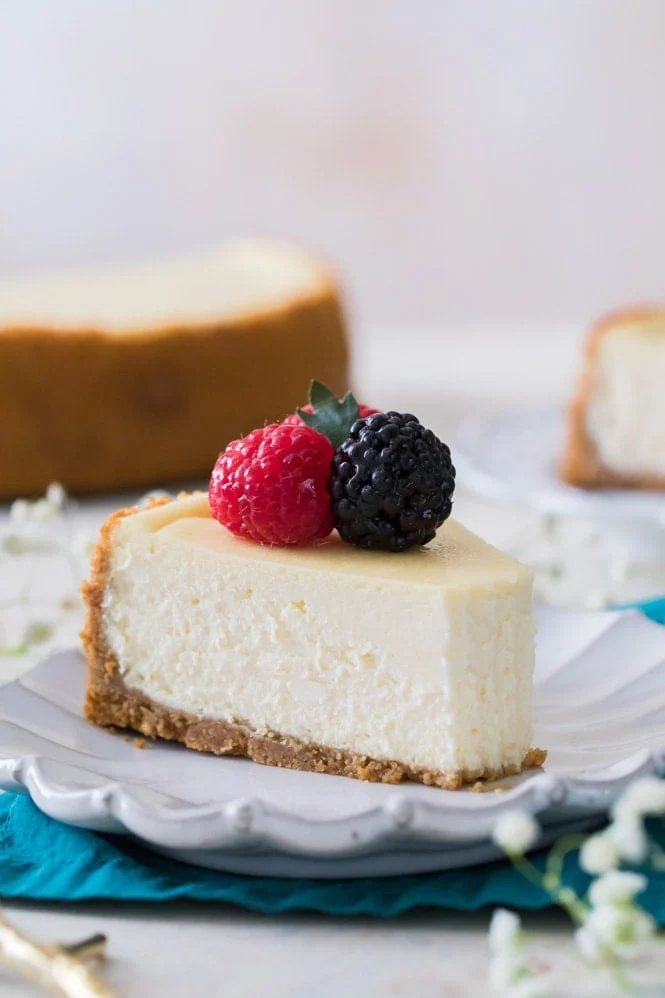

Cheesecake
I got this recipe from this website
all elements in this page are from the link above.

Whats In It?
For a recipe with so few ingredients (cream cheese, eggs, sugar, sour cream,
vanilla & salt), it took a lot longer than you might think to develop
the perfect version. I’ve shared a few cheesecake variations in the
past, including my No-Bake Cheesecake, but getting a perfected classic
version took lots of testing. Finally, here we are.
Oh, and we are skipping the water bath! I’ve always found them to be largely
unnecessary with cheesecakes. Cook yours on a low temperature and follow my tips
below and you’ll have a perfectly creamy and crack-less cheesecake without all
the hassle of a water bath.
ingredients
Graham Cracker Crust
- 1 ½ cups graham cracker crumbs
- 2 Tablespoons sugar
- 1 Tablespoon brown sugar
- 7 Tablespoons butter melted
Cheesecake
- 32 oz cream cheese² softened to room temperature
- 1 cup sugar
- ⅔ cups sour cream
- 1 ½ teaspoons vanilla extract
- ⅛ teaspoon salt
- 4 large eggs room temperature, lightly beaten
Recommended Equipment
- 9" Springform pan
- Mixing bowls
Steps
-
Preheat oven to 325F (160C).
-
Prepare Graham Cracker crust first by combining graham cracker
crumbs, sugar, and brown sugar, and stirring well. Add melted
butter and use a fork to combine ingredients well.
-
Pour crumbs into a 9” Springform pan and press
firmly into the bottom and up the sides of your pan. Set aside.
Cheesecake
-
In the bowl of a stand mixer or in a large bowl (using a
hand mixer) add cream cheese and stir until smooth and
creamy (don’t over-beat or you’ll incorporate too much air).
-
Add sugar and stir again until creamy.
-
Add sour cream, vanilla extract, and salt, and stir until
well-combined. If using a stand mixer, make sure you
pause periodically to scrape the sides and bottom of the
bowl with a spatula so that all ingredients are evenly
incorporated.
-
With mixer on low speed, gradually add lightly beaten eggs,
one at a time, stirring just until each egg is just
incorporated. Once all eggs have been added, use a spatula
to scrape the sides and bottom of the bowl again and make
sure all ingredients are well combined.
-
Pour cheesecake batter into prepared springform pan.
To insure against leaks, place pan on a cookie sheet
that’s been lined with foil.
-
Transfer to the center rack of your oven and bake on 325F
(160C) for about 75 minutes. Edges will likely have
slightly puffed and may have just begun to turn a light
golden brown and the center should spring back to the touch
but will still be Jello-jiggly. Don't over-bake or the
texture will suffer, which means we all suffer.
-
Remove from oven and allow to cool on top of the oven
for 10 minutes. Once 10 minutes has passed, use a knife to gently
loosen the crust from the inside of the springform pan
(this will help prevent cracks as your cheesecake cools and shrinks).
-
Allow cheesecake to cool another 1-2 hours or until near
room temperature before transferring to refrigerator and
allowing to cool overnight or at least 6 hours. Enjoy!
Back Home